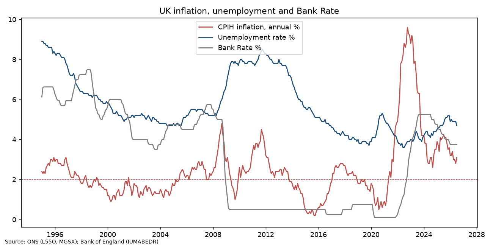
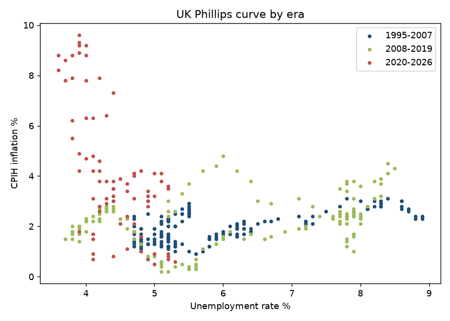

Overview
Does the UK Phillips curve still hold, and how fast does the Bank of England react to inflation?
Methodology & process
- Parsed the ONS time-series CSV format to extract monthly observations and aligned all three series on a common monthly index.
- Split the sample into eras (1995–2007, 2008–2019, 2020–2026) and computed correlations and linear slopes of inflation on unemployment.
- Computed correlations between inflation and Bank Rate 0–24 months later to gauge the policy reaction lag.
- Visualised the series and an era-coloured Phillips curve scatter.
Data & tools
ONS CPIH annual rate (L55O), ONS unemployment rate aged 16+, seasonally adjusted (MGSX), Bank of England Bank Rate (IUMABEDR). Cleaned monthly panel: data/uk_macro_clean.csv (Jan 1995 – Jul 2026, 379 months).
Findings & outcomes
- CPIH peaked at 9.6% in Oct 2022; latest (Jul 2026) CPIH 3.1%, unemployment 4.7%, Bank Rate 3.75%.
- Unemployment ranged from 8.9% (Jan 1995) to 3.6% (Jun 2022).
- No stable textbook trade-off: the correlation was positive in 1995–2007 (0.65) and 2008–2019 (0.36), and only turned negative (−0.64) in 2020–2026, when the energy/supply shock coincided with a very tight labour market.
- CPIH first exceeded the 2% target in May 2021; the first rise in (monthly average) Bank Rate came in Dec 2021, about 7 months later.
- Correlation between inflation and Bank Rate *later* strengthens up to a 15–18 month lead (0.23), consistent with a lagged policy reaction.


Limitations: descriptive correlations, not causal estimates; no inflation-expectations or supply-shock controls.
Why it matters
Reading the inflation–labour market relationship correctly is central to macro, rates and economic-research roles; the analysis shows the trade-off is unstable across eras.
Skills gained
Code & data
analysis.py · download_data.sh · results.txt · data/uk_macro_clean.csv · README.md